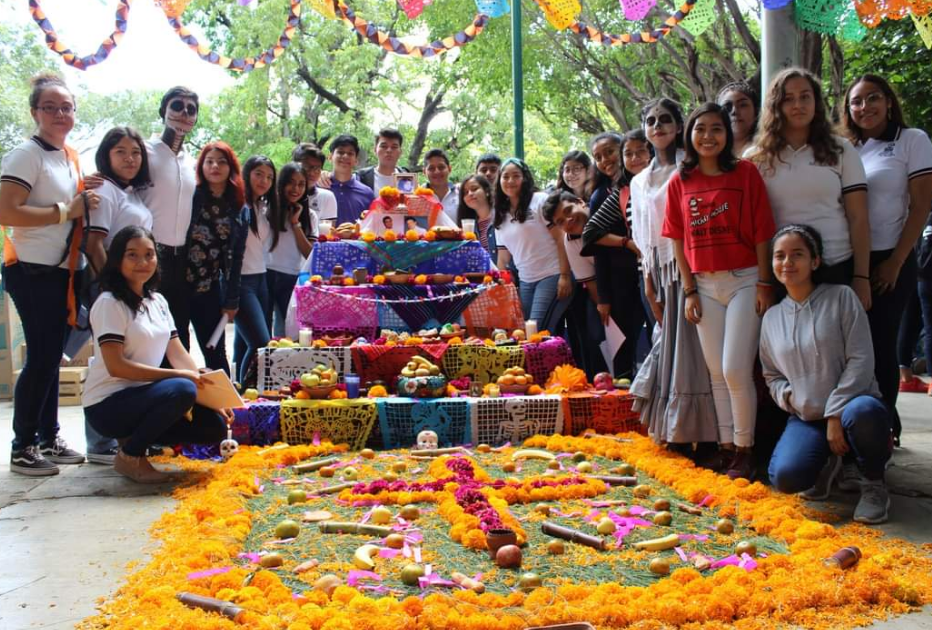

El primer homenaje de bienvenida para recibir a nuestra generacion
Entrando en el ciclo 2018-B
Proyecto medioambiental
Como parte de un proyecto, todos los grupos de la generacion hicieron algunas plantaciones en el plantel, esto para ayudar al medioambiente.


Evento del dia del amor y la amistad dirigido por los grupos "G" y "H"
Fotos disfrutando del evento.

Personas simulando casarse.
Fotos de los organizadores.
Concursos ganados por alumnos de la generacion
Reconocimientos en ambitos academicos.
Reconocimientos en basketball.
Reconocimientos en football.
Evento de primavera a la flor mas bella donde participaron todos los grupos
Fotos del evento.

Jueces del evento incluido a la anterior reina.
Participantes.
Gandora.
Se celebro el dia de la bandera donde todos participaron
Todos exponen la evolucion de nuestra bandera.
Demostración de escoltas de bandera y bandas de guerra
Algunas fotos de nuestra escolta.


La banda de guerra en acción.

El director junto con los representantes del plantel.
Algunas personas que concursaron para un evento matematico
Podemos encontrarnos con un compañero del salon.
Ventas por los grupos "G" y "H"
Alumnos de la capacitación de administración ("G" y "H" respectivamente) haciendo sus ventas.


Proyectos científicos de algunos alumnos
Alumnos del grupo "E".


Alumnos dando explicaciones sobre sus proyectos.

Alumnos del grupo "C".


Para generar conciencia se celebro el dia de la sana alimentacion
Celebramos a la sana alimentacion los grupos "K" y "H".

Eventos de dia de muertos y hallowen donde participaron todos
Primero el evento dia de muertos donde algunos alumnos llegan disfrasados para un concurso.
Tambien realizamos concursos de altares.

Nuestro altar.
Evento de hallowen al dia siguiente donde se expuso el arte de alumnos del paraescolar de arte.
Celebracion a la revolucion Mexicana en la que participaron los grupos "J","K","H","A" Y "F"
Algunas representaciones de los sucesos.

Alumnos con disfraces de la epoca.
Nuestro grupo en el evento.
Evento de navidad
Maestros reunidos para el evento.

Demostraciones de nacimientos elaborados por alumnos, incluidos el "A", "H" y "C" de nuestra respectiva generación.

Árbol de navidad elaborado por el grupo "J" y "K".
Fotos del evento.
Platica sobre las drogas por parte de la escuela
Alumnos de grupo "J" y "D".


Aqui presentamos algunos grupos de la generacion antes y despues de separarnos por capacitacion
Grupo 1A.
Grupo 2K.
Grupo 2H.
Grupo 3G.
Algunos recuerdos del grupo
Algunas fotos de nuestros compañeros.
Trabajos realizados por el grupo
Fotos para un trabajo de ingles.
Maqueta de casa.

Realizamos un bailable de navidad, aqui notamos las practicas que realizamos para mostrar como termina.
Realizamos aviones de papel como parte de un trabajo con instrucciones en ingles y despues de eso nos divertimos con ellos.
Juego creado para presentar en feria de tecnologias.
Clases en línea
A raíz de la "pandemia", nuestro último año en bachillerato fue a través de las ya conocidas clases en línea.

Las paraescolares de igual forma fueron en línea.

Webinars que se llevaron a cabo.

Algunas universidades dando su oferta educativa.

trabajo creado por: